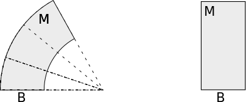

Harmonic maps of Riemannian manifolds
Table of Contents
The PDF version of this page can be downloaded by replacing html in the its address by
pdf.
For example /html/sheaf-cohomology.html should become /pdf/sheaf-cohomology.pdf.
This is my reading note for eells_harmonic_1964.
1 Harmonic maps
1.1 Variational approach: energy integral and tension field
1.1.0.1 Notation.
Let \( M, M', M''\) be Riemannian manifolds of dimension \( n, n' \) and \( n', n''\) respectively. We will use \( i,j,k,\dots, \alpha,\beta,\gamma,\dots, a,b,c \) for local coordinates of \( M, M', M'' \). Let \( f: M \longrightarrow M', f': M' \longrightarrow M''\) be a smooth maps, one denotes \[ f^\alpha_i = \frac{\partial f^\alpha}{\partial x^i},\quad f^\alpha_{ij} = \frac{\partial^2 f^\alpha}{\partial x^i \partial x^j} - \Gamma_{ij}^k f^{\alpha}_k \] so that \( \nabla g = g_i dx^i \) and \( \nabla (\nabla g) = g_{ij}dx^i\otimes dx^j \)
The energy desity of \( f \) at \( p\in m \) is defined by \[ e(f)(p) = \frac{1}{2}\langle g(p), f^g(p) \rangle_p = \frac{1}{2}g^{ij}f^\alpha_i f^\beta_j g'_{\alpha\beta} \] and the energy functional of \( f \) is \[ E(f) = \int_M e(f) dV = \frac{1}{2}\int_M g^{ij}f^\alpha_i f^\beta_j g'_{\alpha\beta} |\det (g_{ij})|^\frac{1}{2} dx^1\wedge \dots\wedge dx^n \]
We recall that the inner product is between 2 tensors of type \( (p,q) \) \( S = S^{i_1\dots i_p}_{j_1\dots j_q}, T = T^{k_1\dots k_p}_{l_1\dots l_q} \) is \( \prod_{m,n} g_{i_m k_m} g^{j_n l_m}S^{i_1\dots i_p}_{j_1\dots j_q} T^{k_1\dots k_p}_{l_1\dots l_q} \)
Under any orthonormal basis of \( T_P M \) and \( T_{f(P)}N \), one can see that the energy density is non-negative at every point. Hence \( E(f) = 0 \) if and only if \( e(f)=0 \) at all points if and only if \( f \) is constant.
Let \( \sigma \) be a symmetric function of \( n \) variables and \( \alpha \) be a symmetric (0,2) tensor field, one can define the \( \sigma- \)energy desity of \( \alpha \) at \( P\in M \) to be \( \sigma (\beta_1,\dots,\beta_n)(P) \) where \( \beta_i \) are eigenvalues of the linear operator \( (g^{ik}\alpha_{ij})_{k,j} \). The \( \sigma \)-energy of \( \alpha \) is \( I_\sigma(\alpha) := \int_M \sigma(\alpha) dV\)
Take \( \alpha = f^*g' \), one calls \( \sigma(\alpha) \) the /\( \sigma \)-energy density of \( f \) and \( I_\sigma(\alpha) \) the \( \sigma \)-energy of \( f \).
For example, the energy functional \( E(f) \) is \( I_\frac{\sigma_1}{2}(f) \). \( V(f):=I_{\sigma^{1/2}_n}(f) \) is called the volume of \( f \).
Let \( f_t: M \longrightarrow M' \) be a smooth family of smooth maps between Riemannian manifolds for \( t\in (t_0,t_1) \). Then \[ \frac{d}{dt}E(f_t) = -\int_M \left(\Delta f_t^\gamma +g^{ij}\Gamma'^{\gamma}_{\alpha\beta} f^{\alpha}_{t,i}f^{\beta}_{t,j}\right) g'_{\gamma\nu} \frac{\partial f_t^\nu}{\partial t}dV,\qquad \forall t\in (t_0,t_1) \]
Direct computation.
- A vector field along \( f: M \longrightarrow M' \) is a smooth application \(v: M\longrightarrow TM'\) such that \( \pi\circ v = f \) where \( \pi: TM' \longrightarrow M'\) is the canonical projection. In other words, it is the association of each point \(P\in M \) a tangent vector at \( f(P) \)
- The tension field of \( f \) is the following vector field along \( f \) defined by \[ \tau(f)^\gamma:= \Delta f^\gamma +g^{ij}\Gamma'^{\gamma}_{\alpha\beta} f^{\alpha}_{i}f^{\beta}_{j} \] By the Lemma lem:var-energy, \( \tau(f) \) is the unique vector field along \( f \) such that \( \frac{d }{dt}E(f_t) = -\int_M \langle \tau(f), \frac{df_t}{dt}\rangle \). In particular, if \( f_t \) is the variation of \( f \) along a vector field \( v \) along \( f \), i.e. \(f_t(P) = \exp_{f(P)}(tv(P))\) then \(\nabla_v E(f) = - \langle \tau(f), v \rangle\) along \( f \).
- \( f: M \longrightarrow M' \) is called harmonic if \( \tau(f)=0 \), or equivalently \( f \) is a critical point of \( E \).
In normal coordinates of \( M \) at \( P \) and \( M' \) at \( f(P) \), the tension field of \( f \) is given by \[ \tau^\gamma(f)(P) = \sum_i \frac{\partial^2 f^\gamma}{\partial (x^i)^2}(P) \]
- If \( M' \) is flat, i.e. \( R'_{\alpha\beta\gamma\delta} = 0 \) then \( \tau(f)^\gamma = \Delta f^\gamma\) is linear in \( f \).
- Since \( \tau(f) \) depends locally on \( f \), isometries and covering maps are harmonic.
Holomorphic maps between Kahler manifolds are harmonic.
We recall that exponential functions \( \exp_P: T_PM \longrightarrow M' \) on a Kahler manifold \( M \) are holomorphic for any \( P\in M \). In fact, let \( v\in T_PM \) and \( \delta v \in T_v(T_P M) \) be a tangent vector at \( v \) and denote abusively by \( J \) the complex structure of the complex vector space \( T_P M \) and that of \( M \), one needs to see that
\begin{equation} \label{eq:tangent-exp} D\exp_P(v).J\delta v = J(\exp_P(v)) D \exp_P(v).\delta v \end{equation}In fact, let \( Y_1, Y_2 \) be Jacobi fields along \( U(t) = \exp_P(tv) \) the geodesics of \( M \) starting at \( P \) in direction \( v \) with \( Y_1(0)=Y_2(0) = 0, \dot Y_1(0) = \delta v, \dot Y_2(0) = J\delta v \) then the LHS of \eqref{eq:tangent-exp} is \( Y_2(1) \), and the RHS is \( J(U(1)) Y_1(1) \). Then one can see that \( Y_2(t) - J(U(t)) Y_1(t) = 0\) for every \( t\in [0,1] \) since it is true at \( t=0 \) and the derivative with respect to \( t \) vanishes as \( \nabla_{\dot U}J = 0 \).
Therefore, at a point \( P \) of a Kahler manifold \( M \), there exist holomorphic coordinates \( z^j = x^j + i y^j \) of \( M \) in a neighborhood of \( P \) such that \( \{ x_j,y_j: j=\overline{1,n/2} \} \) are normal coordinates centered in \( P \). Using such coordinates for \( P\in M \) and \( f(P)\in M' \), one has \( f^\gamma=0 \) since \( f^\gamma \) is holomorphic and \( \Gamma'^\gamma_{\alpha\beta}(P)=0 \) by normality, it follows that \( \tau(f)=0 \) at every point \( P\in M \).
1.2 Formulation using connection on vector bundle
1.2.0.1 Setup and notation.
Let \( E \) be a metric vector bundle over a Riemannian manifold \( M \), i.e. each fiber of \( E \) is equiped with an inner product that we denote by \( (g'_{\alpha\beta}) \). The metric of \( M \) is denoted by \( (g_{ij}) \). Let \( n \) and \( m \) be the dimension of \( M \) of the fiber.
1.2.0.2 Covariant derivatives and exterior derivatives.
We recall that a covariant derivative or a connection \( \tilde\nabla \) of \( E \) is uniquely determined in a local coordinates by an \( m\times m \) matrix \( A \) of 1-form on \( M \), in other words an 1-form on \( M \) with value in \( Hom_M(E,E) \) which depends on the local frame of \( E \) (i.e. \( A \) is not a tensor with value in \( E \)). \( A \) is called the connection form of \( \tilde \nabla \). Locally \[ \tilde\nabla_X (s^\alpha \tilde e_\alpha) = (\nabla_X s^\alpha) \tilde e_\alpha + A^\alpha_\beta(X)s^\beta\tilde e_\alpha. \]
When one prefers to work with forms other than tensors with value in \( E \), one uses an exterior derivative, a map \( D: A^p(M,E) \longrightarrow A^{p+1}(M,E) \) which turns an \( p \)-form with value in \( E \) to an \( p+1 \)-form with value in \( E \). Locally \[ D (s^\alpha \tilde e_\alpha) = (d s^\alpha) \tilde e_\alpha + A^\alpha_\beta\wedge s^\beta\tilde e_\alpha. \] and \[ D^2(s^\alpha \tilde e_\alpha = (dA + A\wedge A)\wedge s. \] One notes \( \Theta := dA + A\wedge A \), which is an \( m\times m \) matrix of 2-forms of \( M \). Unlike \( A \), \( \Theta \), seen as an 2-form with value in \( Hom_M(E,E) \) does not depend on the local frame of \( E \), i.e. \( \Theta \) transforms as a (0,2) tensor with value in \( E \), called the curvature form.
The fibrewise metric structure of \( E \) and the metric tensor of \( M \) give rise to a pointwise inner product of \((p,q) \) tensors of \( M \) with value in \( E \), in particular a pointwise inner product \( (s, s')\mapsto s\cdot s' \) from \( A^p(M,E)\times A^p(M,E) \) to \( C^\infty(M) \). Integrated over \( M \), the pointwise inner product gives rise to a global inner product \( \langle \cdot,\cdot \rangle \), i.e. a true inner product of \( A^p(M,E) \). One denotes by \( \delta: A^{p+1}(M,E)\longrightarrow A^p(M,E) \) the adjoint operator of \( D: A^p(M,E) \longrightarrow A^{p+1}(M,E) \) with respect to this inner product, i.e. \( \langle Ds, s' \rangle_{A^{p+1}(M,E)} = \langle s, \delta s' \rangle_{A^{p}(M,E)}\) for all \( s\in A^{p}(M,E), s'\in A^{p+1}(M,E) \).
1.2.0.3 Laplacian operator and harmonic forms.
The Laplacian operator is defined as a endomorphism of \( A^p(M,E) \) given by \[ \tilde \Delta = -(D\delta +\delta D) \] and a form \( s\in A^p(M,E) \) is called harmonic if \( \tilde\Delta s=0 \). Since the Laplacian operator represents the Dirichlet integral, i.e. \[ \langle Ds, Ds' \rangle + \langle \delta s, \delta s' \rangle = \langle -\tilde\Delta s, s' \rangle, \] one has \( \tilde\Delta s = 0 \) if and only if \( Ds = \delta s = 0 \).
1.2.0.4 Riemannian connected bundle.
The metric vector bundle \( E \) over \( M \) is called a Riemannian-connected bundle if it has a connection \( \tilde \nabla \) under which the metric \( g' \) of \( E \) is parallel, i.e. \( \tilde\nabla g' = 0 \), in other words, the matrix \( A \) in a orthonormal frame is anti-symmetric: \( A + \transp{A} = 0 \). Unless explicitly indicated, we always suppose that our metric vector bundle \( E \) is Riemannian-connected and the metric \( g' \) is parallel to the connection being used.
The case of our interest is when we have a smooth map \( f: M \longrightarrow M' \) and \(E = f^*TM' \) is a metric vector bundle over \( M \) under the metric \( g' \) induced from \( M' \). Taking the connection \( \tilde\nabla \) to be the Levi-Civita connection \( \nabla' \) on \( M' \), meaning \[ \tilde\nabla_X s = \nabla'_{f_*X}s, \] for any vector field \( s \) along \( f \), one can see that \( E \) is a Riemannian-connected bundle over \( M \).
Let \( E \) be a Riemannian-connected bundle and \( s\in A^1(M,E) \), one has
- \( \delta s = (\delta s)^\alpha \tilde e_\alpha \in A^0(M,E) \) where \[ (\delta s)^\alpha = -g^{ij}\left(\nabla_i s^\alpha_j + A^\alpha_{\beta i} s^\beta_j \right), \]
- \( \Delta s = (\Delta s)_i dx^i \) where \( (\Delta s)_i \) is an \( m\times m \)
matrix given by
\[
(\Delta s)_i = {\tilde\nabla}^k {\tilde\nabla}_k s_i - \transp{\left(\Theta_i^h - {\rm
Ric}_i^h\right)} s_h
\]
where:
- the indices \( i,h,k \) correspond to local coordinates of \( M \), not a frame of \( M' \),
- \( \Theta_i^h \) is the curvature form of \(\tilde\nabla \) with its indices raised by the metric \( g \) of \( M \),
- \( {\rm Ric}_i^h = {\rm Ric}_i^h I_m \) is the Ricci curvature tensor of \( (M,g) \) with indices raised by the metric \( g \), multiplied by the identity \( m\times m \) matrix,
- \( \tilde \nabla^k = g^{hk}\tilde\nabla_h \).
With \( s\cdot s' \) denoting the pointwise inner product of \( A^1(M,E) \) and \( \langle \cdot,\cdot \rangle \) denoting the metric \( g' \) of \( E \), one has
\begin{equation} \label{eq:laplace-Q} \frac{1}{2}\Delta(s\cdot s) = - s\cdot \Delta s - \langle\tilde\nabla_i s_k,\tilde\nabla^i s^k \rangle_E - \left\langle \transp{\left(\Theta_i^h - {\rm Ric}_i^h\right)}s_h, s^i\right\rangle_E \end{equation}
Computational in nature.
- We note by \( Q(s) \) the last term of \eqref{eq:laplace-Q}, then \( Q \) is a (2,0) tensor on \( M \) with value in \( E^*\otimes E^* \) where \( E^* \) is the dualised bundle of \( E \). In practice, \( Q \) is an \( mn\times mn \) matrix with coefficients \[ Q(s)_{\alpha\beta}^{hi} = g^{hk}h^{ij}\left[ \left(g'_{\alpha\gamma} \Theta_\beta^\gamma\right)_{kj} - g'_{\alpha\beta} {\rm Ric}_{kj} \right] \].
Since \( \int_M \Delta(s\cdot s)dV=0 \), if \( s \) is harmonic, one has
\begin{equation} \label{eq:Q-negative} \begin{split} \int_M Q(s) dV &= -\int_M \langle\tilde\nabla_i s_k,\tilde\nabla^i s^k \rangle_E dV\\ &= -\int_M \| \nabla_i s^\alpha_k dx^i\otimes dx^k\otimes \tilde e_\alpha\|^2_{A^2(M,E)}dV\leq 0 \end{split} \end{equation}
1.3 The case of \( E = f^* TM' \)
1.3.1 Energy functional and tension field
Our interest will be the case of Example ex:pullback-tangent where \( E =f^*TM'\) for some smooth map \( f: M \longrightarrow M' \) of Riemannian manifolds is a Riemmanian-connected bundle over \( M \) with the connection \( \tilde\nabla \) given by the Levi-Civita connection of \( M' \).
The tangent map \( Tf: TM \longrightarrow TM' \) can be interpreted as a form \( f_* \) in \( A^1(M, E) \). The energy functional can be rewritten as \[ E(f) = \frac{1}{2}\int_M f^\alpha_i f^\beta_j g^{ij}g'_{\alpha\beta}dV =\frac{1}{2}\langle f_*, f_* \rangle_{A^1{M,E}}. \]
Let \( f: M \longrightarrow M' \) and \( E = f^* TM' \) be the Riemannian-connected bundle over \( M \). Then:
- \( A^\beta_\alpha = \Gamma'^{\beta}_{\gamma\alpha} f_i^\gamma dx^i \) where \( \Gamma'^{\beta}_{\gamma,\alpha} \) are Christoffel symbols of \( (M',g') \).
- \( Df_* = 0 \) where \( f_* \) is considered as an element of \( A^1(M,E) \). Hence \( \tilde\Delta f_*= -D\delta f_* \).
- The tension field of \( f \) is \( \tau f_* = -\delta f_*\).
- We will use the fact that \( \tilde\nabla g' = 0 \). Given two section \( s=s^\alpha \tilde e_\alpha,t=t^\beta \tilde e_\beta \) of \( E \), expanding \( \nabla_i(s\cdot t) = (\tilde\nabla_i s)\cdot t +s\cdot \tilde\nabla_i t \), one has \[ s^\alpha t^\beta \frac{\partial g'_{\alpha\beta}}{\partial x^i} = s^\alpha t^\beta \left( A^\gamma_{\alpha i} g'_{\gamma\beta} + A^\gamma_{\beta i} g'_{\alpha\gamma}\right) \] Taking \( s,t \) to be of small support, \( \alpha=\beta \) and substituing \( A^\gamma_{\alpha i} = \Gamma'^\nu_{\gamma\alpha}f^\gamma_i \), one obtains the first statement.
- By direct computation: \[ D f_* = \left(\frac{\partial^2 f^\alpha}{\partial x^i \partial x^j} + \Gamma'^\alpha_{\gamma\beta} f^\gamma_i f^\beta_j \right)dx^j\wedge dx^i\otimes \tilde e_\alpha, \] which is the product of a symmetric quantity in \( (i,j) \) and an anti-symmetric one, hence 0.
- Using the first part of Lemma lem:calculs-general for \( s=f_* = f^\alpha_i dx^i\otimes \tilde e_\alpha \), one has \( \delta f_* = -g^{ij}\left(\nabla_i\nabla_j f^\gamma + \Gamma'^\gamma_{\alpha\beta} f^\alpha_i f^\beta_j\right)\tilde e_\gamma=-\tau(f) \)
It follows immediately that
\( f: M \longrightarrow M' \) is a harmonic map of Riemannian manifolds if and only if \( f_* \) is harmonic as form in \( A^1(M,f^* TM') \).
1.3.2 Fundamental form, some results in case of signed curvature
The fundamental form of a map \( f: M \longrightarrow M' \) of Riemannian manifolds is the (0,2) symmetric tensor on \( M \) with value in \( E=f^* TM' \) defined by \[ \beta(f):= \tilde \nabla f_* = \left(f^\gamma_{ij} + \Gamma'^\gamma_{\alpha\beta} f^\alpha_i f^\beta_j\right) dx^i\otimes dx^j\otimes \tilde e_\gamma. \]
The function \( f \) is called totally symmetric if \( \beta(f) = 0 \) identically on \( M \).
- The tension field \( \tau(f) = g^{ij} (\beta(f))_{ij} \) is the trace of the fundamental form.
- If \( f \) is totally geodesic then it is harmonic.
When \( s = f_* \), Lemma lem:calculs-general and Remark rem:calculs-general become, with no more than direct computation. The appearance of the Riemann curvature tensor \( R' \) of \( (M',g') \) is due to the formula \[ R'^\rho{}_{\sigma\mu\nu} = \partial_\mu\Gamma'^\rho{}_{\nu\sigma} - \partial_\nu\Gamma'^\rho{}_{\mu\sigma} + \Gamma'^\rho{}_{\mu\lambda}\Gamma'^\lambda{}_{\nu\sigma} - \Gamma'^\rho{}_{\nu\lambda}\Gamma'^\lambda{}_{\mu\sigma}. \]
- \( Q(f_*) \) is given by \[ Q(f_*) = R'_{\alpha\beta\gamma\delta} f^\alpha_i f^\beta_j f^\gamma_k f^\delta_l g^{ik}g^{jl} - {\rm Ric}^{ij}f_i^\alpha f^\beta_j g'_{\alpha\beta} \] and \[ Q(f_*)_{\alpha\beta}^{ij} = R'_{\alpha\beta\gamma\delta}f^\gamma_k f^\delta_l g^{ik}g^{jl} -{\rm Ric}^{ij}g'_{\alpha\beta}. \]
- If \( f \) is harmonic then \[ \Delta e(f) = |\beta(f)|^2 - Q(f_*) \] where \( |\beta(f)| \) is the pointwise norm of \( \beta(f) \).
The previous computation of \( Q(f_*) \) in term of Riemannian curvature of \( M' \) and Ricci curvature of \( M \) give the following result in the case where the curvature of \( M \) and \( M' \) are of definite sign.
1.3.2.1 Notation.
Given a Riemannian manifold \( M \), we will use the following notation:
- \( {\rm Ric} \geq 0 \) (resp. \( {\rm Ric} > 0 \)) if the Ricci curvature is positive semi-definite (resp. positive definite) as symmetric bilinear form.
- \( {\rm Riem} \leq 0 \) (resp. \( {\rm Riem} < 0 \)) if all sectional curvatures are negative (resp. strictly negative), i.e. \(R_{ijhk} u^i v^j u^h v^k \leq 0\) (resp. \(R_{ijhk} u^i v^j u^h v^k < 0\)) for non-colinear vectors \( u,v \).
Let \( f: M \longrightarrow M' \) be a map of Riemannian manifolds.
- If \( f \) is harmonic and \( Q(f_*) \leq 0 \) then \( f \) is totally geodesic and \( e(f) \) is constant.
- If \( {\rm Ric}(M) \geq 0 \) and \( {\rm Riem}(M')\leq 0 \) then \( f \) is harmonic if and only if \( f \) is totally geodesic.
- Under the same condition as 2),
- If \( {\rm Ric}(M) >0 \) at one point of \( M \) then all harmonic maps are constant.
- If \( {\rm Riem}(M') <0 \) everywhere in the image of \( f \) and \( f \) is harmonic, then \( f \) is either constant or maps \( M \) onto a closed geodesic of \( M' \).
All the statements are consequence of 2) of Lemma lem:calculs-Q-pullback and the fact that \( \int_M \Delta e(f)dV = 0 \) noticing that
- \( {\rm Ric}^{ij}f^\alpha_i f^\beta_j g'_{\alpha\beta} \) is \( {\rm Ric}\otimes g' \) applied doubly to \( f_i^\alpha dx^i\otimes\tilde e_\alpha \).
- \( R'_{\alpha\beta\gamma\delta} f^\alpha_i f^\beta_j f^\gamma_k f^\delta_l g^{ik}g^{jl} \) is \( (f^* R')_{ijhk}g^{ik}h^{jl} \). In a normal coordinate at \( P \) where \( g^{ik}=\delta_{ik}, g^{jl}=\delta_{jl} \), it is the sum of sectional curvatures of tangent planes formed by \( f_*e_i, f_*e_j \), and therefore negative.
For 3), if \( {\rm Ric}(M)<0 \) at one point \( P\in M \) then at that point \( f^\alpha_i dx^i \tilde e_\alpha =0 \), meaning \( f_*=0 \), hence \( e(f) \) vanishes at \( P \). Since \( e(f) \) has to be constant, it vanishes identically, which implies that \( f \) is constant.
If \( {\rm Riem}(M') < 0 \), one sees that all \( f_* e_i, f_* e_j\) are colinearmmetric, i.e. the image of \( Tf \) is of one dimension, which leads to the conclusion, as we will see later that a totally geodesic map transform geodesic to geodesic.
1.4 Example: Riemannian immersion
Let \( f: M \longrightarrow M' \) be a Riemannian immersion, i.e. \( Tf \) is injective and \( f^*g' = g \). We will see that the fundamental form \( \beta(f) \) that we defined earlier is the same as how it is often defined in courses of Riemannian geometry.
1.4.1 Second fundamental form.
One defines the symmetric (0,2)-tensor \( \sff \) as the unique tangent vector of \( M' \) such that \[ \langle \sff_{ij},\xi_\sigma \rangle= -\langle \tilde\nabla_i\xi_\sigma, f_* e_j\rangle \] for every vector field \( \xi_\sigma \) of \( M' \) orthogonal to \( M \).
If \( f \) is a Riemannian immersion then \( \beta(f)_{ij} = \sff_{ij} \) and they are orthogonal to \( M \). In particular, if \( f \) is totally geodesic than it maps geodesics of \( M \) to geodesics of \( M' \)
One has
\begin{equation} \label{eq:second-fund-form} \begin{split} \langle \tilde\nabla_i\xi_\sigma, f_* e_j)\rangle &= \langle\xi_\sigma, \tilde\nabla_i (f_* e_j)\rangle = \langle \xi_\sigma,\tilde\nabla_i(f^\gamma_l dx^l\otimes \tilde e_\gamma) e_j + f_* \nabla_i e_j \rangle\\ &= \langle \xi_\sigma, (f^\gamma_{il} dx^l\tilde e_\gamma + f^\gamma_l dx^l \tilde\nabla_i\tilde e_\gamma) e_j \rangle\\ &= \langle \xi_\sigma, f^\gamma_{ij} \tilde e_\gamma + f^\gamma_j A^\alpha_{\gamma_i}\tilde e_\alpha \rangle = \left\langle \xi_\sigma, \left(f^\gamma_{ij} + \Gamma'^\gamma_{\alpha\beta} f^\alpha_i f^\beta_j \right)\tilde e_\gamma \right\rangle = \langle\xi_\sigma\tilde\nabla_i(f_*).e_j \rangle \end{split} \end{equation}where we used \( \xi_\sigma \perp f_* e_j \) in the first reduction and \( \xi_\sigma \perp f_*([e_i, e_j] \) in the second one. Hence \( \sff_{ij} \equiv \beta(f)_{ij} \) modulo an element in \( TM \). In fact one has \( \beta(f)_{ij}\perp M \) and therefore \( \sff = \beta(f) \), since \( \beta(f)_{ij} = \tilde \nabla_i (f_*). e_j \) and
\begin{equation} \begin{split} \langle \beta(f)_{ij}, f_* e_k \rangle &= \langle\tilde \nabla_i (f_*). e_j, f_* e_k \rangle = \tilde\nabla_i \langle f_* e_j, f_* e_k \rangle - \langle \nabla_i e_j, e_k \rangle - \langle f_*e_j, \tilde\nabla_i(f_* e_k) \rangle \\ &=-\langle \beta(f)_{ik}, f_* e_j \rangle + \nabla_i \langle e_j,e_k \rangle - \langle \nabla_i e_j, e_k \rangle - \langle e_j, \nabla_i e_k \rangle\\ &= -\langle \beta(f)_{ik}, f_* e_j \rangle \end{split} \end{equation}Then using the symmetric of \( \beta(f)_{ij} \), one has \( \langle \beta(f)_{ij}, f_* e_k \rangle=0 \).
Finally, if \( \beta(f)=0 \) and \( X \) is a geodesic vector field of \( M \), one needs to prove that \( f_*X \) is a geodesic vector field of \( M' \). In fact \[ \tilde\nabla_{X}(f_* X) = (\tilde\nabla_X f_*) X + f_*\nabla_X X = \beta(f)(X,X) = 0. \] Hence \( f_* X \) is a geodesic field of \( M' \).
The inclusion \( x \mapsto (x,y_0) \) of a Riemannian manifold \( M \) to the Riemannian product \( M\times N \) is totally geodesic.
Given an orthonormal frame \( (\xi_\sigma)_{1\leq\sigma\leq n'-n} \), the mean normal curvature field of \( M \) in \( M' \) at \( P\in M \) is defined as \[ \xi(P):= \sum_{\sigma=1}^{n'-n} g^{ij}\sff_{ij} \xi_\sigma = \sum_{\sigma=1}^{n'-n}\langle \tau(f),\xi_\sigma \rangle \xi_\sigma. \] The immersion \( f \) is said to be minimal if \( \xi \) vanishes identically on \( M \).
- Since \( (\xi_\sigma)_{1\leq\sigma\leq n'-n} \) is an orthonormal frame, one also has \[ \xi(P) = -g^{ij}\langle \tilde\nabla_i\xi_\sigma, f_* e_j \rangle \xi_\sigma(P)= - \sum_{\sigma=1}^{n'-n} {\rm div\ }(\xi_\sigma(P))\ \xi_\sigma(P) \]
- The mean normal curvature field is the tension field of \( f \), i.e. \( \xi = \tau(f) \). Minimal immersions are exactly harmonic immersion.
1.4.2 The case of signed curvature.
Noticing that if \( f: M \longrightarrow M' \) is a Riemannian immersion then the Ricci term of lem:calculs-Q-pullback is actually the scalar curvature of \( M \), one has
Let \( f: M \longrightarrow M' \) be a Riemannian immersion. Suppose that \( {\rm Riem}(M')\leq 0 \) and \( r=g^{ij} {\rm Ric}_{ij} <0 \) at one point of \( M \). If \( f \) is harmonic then it is constant.
1.5 Example: Riemannian submersion
1.5.1 Results of Ehresmann and Hermann.
In this section, the function \( f: M \longrightarrow M' \) will be a Riemannian submersion \( pi: M \longrightarrow B \), i.e. \( T\pi \) is subjective and \( \pi^*g' = g \). We will regard \( \pi \) as a fibration and calculate its tension field. We start with two theorem of Hermann with besse_einstein_2007 as reference. A tangent vector of \( M \) lying in \( \ker T_P\pi \) is said to be vertical. Since \( \pi^* g' = g \), the plane \( \mathcal{H}_P = \ker T_P\pi \) is isometric to \( T_{\pi(P)}B \) and is said to be horizontal, such \( \mathcal{H}_P \) form a distribution of planes as \( P \) varies in \( M \).
The plane distribution \( \mathcal{H} \) is called complete if every curve \( \gamma \) in \( B \) lifts horizontally on \( M \) at each point \( P \) in \( M_{\gamma(0)} \), i.e. there exists a curve \( \hat \gamma \) in \( M \) such that \( \pi\circ\hat\gamma = \gamma \) and \( \hat\gamma(0)=P\in M \).
A vector field \( X \) of \( M \) is said to be projectable if \( \pi_* X \) is well-defined, i.e. \( \pi_* X \) does not change on each fibre. In that case, one says that \( X \) is \( \pi \)-associated to the vector field \( \pi_* X \) of \( B \).
\( X \) is said to be basic if it is projectable and horizontal.
If a vector field \( X \) on \( M \) is \( \pi \)-associated with a vector field \( \check X \) on \( B \), then
- their flows are related by \( \pi \): \( \pi(\Phi_X^t) = \Phi_{\check X}^t \),
- the Lie bracket satisfies: \( [X,Y] \) is projectable and \( \pi \)-associated with \( [\check X,\check Y] \).
- If \( \mathcal{H} \) is complete then the fibration \( \pi: M \longrightarrow B \) is locally trivial.
- If \( M \) is complete then \( \mathcal{H} \) is a complete distribution and \( B \) is a complete manifold.
- The trivialising map \( \phi: U_M \longrightarrow U_B\times F\), where \( U_M, U_B \) are open set of \( M,B \), is only a diffeomorphism and not a isometry, each fibre is equipped with different metric when identified with \( F \).
The metric of \( M \) is not a Riemannian product of a (vertical) metric on \( F \) and the (horizontal) metric on \( B \), but it is a product pointwise. To be precise, one has
\begin{equation} \label{eq:g-product} g_{(b,f)}(v_h^1 + v_v^1, v_h^2 + v_v^2) = g'_b(v^1_h, v^2_h)\times \hat{g}_{(b,f)}(v_v^1, v_v^2) \end{equation}where \( v^i = v_h^i + v_v^i \) is the decomposition of vector \( v^i \) to horizontal and vertical components. \( g' \) is the horizontal metric (the metric on \( M \)) and \( \hat g_{(b,f)} \) is the restriction of \( g \) on the fibre \( M_b \). However, when the fibration is of totally geodesic fibres, \( g \) is a Riemannian product \( g_{(b,f)} = g'_b\times \hat g_f\), see Theorem thm-Hermann.
The first part is due to Ehresmann, take a small geodesic ball center at \( P \), and connect every point \( Q \) to \( P \) by a curve \( \gamma \). Map every point \(\hat \gamma(0)\in M_P \) to the point \( \hat\gamma(1)\in M_Q \) where \( \hat\gamma \) is the lift of \( \gamma \) starting from \( \hat\gamma(0) \). One has a diffeomorphism \( \theta_\gamma: M_{\gamma(0)} \longrightarrow M_{\gamma(1)} \).
The second part, due to Hermann, can be established in 2 steps:
First, by direct computation, one proves that if any geodesic field \( X \) on \( B \) lift to a horizontal vector field \( \hat X \) then \( \hat X \) is a geodesic vector field. In fact, denote by \( \nabla \) and \( \tilde\nabla \) the Levi-Civita connection on \( M \) and \( B \) respectively and \( \mathcal{V}, \mathcal{H} \) the vertical and horizontal projection of tangent vectors of \( M \). Then \(\nabla_{\hat X}\hat X = \mathcal{V}\nabla_{\hat X}\hat X + \mathcal{H}\nabla_{\hat X}\hat X\) in which \( \mathcal{H}\nabla_{\hat X}\hat X \) is actually the horizontal lift of \( \tilde\nabla_X X \) therefore vanishes. We claim that \( \mathcal{V}\nabla_{Y}Y = \frac{1}{2}\mathcal{V}[Y,Y]\) hence also vanishes for every basic vector field \( Y \). In fact let \( U \) be any vertical vector field then \[ \langle U, \mathcal{V}\nabla_{Y}Y \rangle = \langle U,\nabla_Y Y \rangle = - \langle \nabla_X U, X \rangle= \langle \nabla_U X, X \rangle = \frac{1}{2}\nabla_U \langle X,X \rangle=0 \] where we used the fact that \( \)\( \nabla_X U -\nabla_U X = [X,U] = \widehat{[\pi_* X,\pi_* U]} = 0 \) and \( \langle X, X \rangle \) is constant on each fibre (being \(\langle \pi_* X,\pi_* X \rangle \)), hence in every vertical direction \( U \) (Remark: this corresponds to the fact that \( g' \) only depend on \( b \)).
Now if \( M \) is complete then for every geodesic curve \( \gamma \) in \( B \), let \( X \) be the velocity field of \( \gamma \) and \( \hat X \) be the horizontal lift of \( X \), which is now a horizontal,geodesic field of \( M \), whose integral curves are lifts of \(\gamma \). Therefore \( B \) is complete and every geodesic curve of \( B \) lifts horizontally to \( M \).
For the general curve \( \gamma \) of \( M \), the idea will be to approximate it by geodesics and lift part by part.

Figure 1: The trivialising map is only a diffeomorphism and not an isometry
If the fibration \( \pi: M \longrightarrow B \) is of totally geodesic fibres then the diffeomorphisms \( \hat\gamma(0) \longrightarrow \hat\gamma(1) \) are in fact isometries between fibres and \( M \) is then locally a Riemannian product of \( B \) and the fibre, now equipped with its unique metric induced by \( M \).
We need to prove that the metric on fibres \( \hat g_{(b,f)} \) does not depend on the point \( f \) of the fibre, i.e. for every basic vecotr field \( X \), one has \( \mathcal{L}_X\hat g=0 \), where by \( \hat g \), we mean the (0,2) symmetric tensor \( (Y_1, Y_2)\mapsto \langle \mathcal{V}Y_1, \mathcal{V}Y_2 \rangle \). Let \( U,V \) be vertical vector fields of \( M \) then
\begin{equation*} \label{eq:calcul-Hermann} \begin{split} X(\hat g(U,V)) &= (\mathcal{L}_X \hat g)(U,V) + \hat g([X,U],V) + \hat g(U, [X,V])\\ &= \langle \nabla_X U, V \rangle - \langle \nabla_U X, V \rangle + \langle U, \nabla_X V \rangle - \langle U, \nabla_V X \rangle + (\mathcal{L}_X\hat g)(U,V) \end{split} \end{equation*}Hence \( (\mathcal{L}_X \hat g)(U,V) = \langle \nabla_U X, V\rangle + \langle U, \nabla_V X \rangle = -2 \langle \sff(U,V), X \rangle = 0\). Since the map \( \hat\gamma(0) \mapsto \hat\gamma(1) \) is in the one-parameter group of differomorphism associate to a basic vector field \( X \), it preserves \( \hat g \).
1.5.2 Tension fields and harmonic fibrations.
We will now calculate the tension field of a fibration map \( \pi: M \longrightarrow B \).
Let \( \pi: M^n \longrightarrow B^{n'} \) be a complete Riemannian fibration then
- \( e(\pi) = n/2 \).
- Let \( M_b \) be a fibre of \( \pi \) and \( \iota_{M_b}: M_b \hookrightarrow M \) be the inclusion. Then \( \tau(\pi) = -\pi_*\tau(\iota_{M_b}) \) on \( M_b \).
In particular, \( \pi \) is harmonic if and only if its fibres are minimal submanifolds of \( M \), i.e. the inclusions \( \iota_{M_b} \) are harmonic.
- is obvious. For 2), note that
\[ \tau(\iota_{M_b}) = -\sum_{\sigma = 1}^{n'}{\rm div\ }(e_\sigma(P))e_\sigma(P) \] for any orthonormal frame \( e_\sigma(P) \) of normal vectors of \( M_{\pi(P)} \). Take \( e_\sigma \) to be \(e_\sigma = {\rm grad\ } \pi^\sigma \) where \( \pi^\sigma \) is the \( \sigma \)-th component of \( \pi \) in a normal coordinate of \( V \) around \( \pi(P) \). Note that \( e_\sigma \) are actually the horizontal lift of the basis vectors \( \tilde e_\sigma \) of the frame at \(\pi( P) \), and therefore are normal vectors of \( M_P \).
Meanwhile, one has \( \tau(\pi) = \Delta \pi^\sigma \tilde e_{\sigma} \) at \( \pi(P) \) since the Christoffel symbols vanish at \( P \). Comparing the two vector fields, one has \( \tau(\pi) = -\pi_*\tau(\iota_{M_b})\) at \( P \).
A complete Riemannian fibration \( \pi: M \longrightarrow B \) with totally geodesic fibres are harmonic.
1.6 Composition of maps
The following results come from direct computation of the second fundamental form and tension field of composition of maps between Riemannian manifolds. Again, we use indices \( i,j,k,\dots \) for \( M \), \( \alpha,\beta,\gamma,\dots \) for \( M' \) and \( a,b,c \) for \( M'' \).
Let \( f: M \longrightarrow M' \) and \( f': M' \longrightarrow M'' \) be smooth maps of Riemannian manifolds, then
\begin{equation} \label{eq:sff-composition} \beta(f'\circ f)^a_{ij} = \beta(f)_{ij}^\gamma f'^a_\gamma + \beta(f')_{\alpha\beta}^a f^\alpha_i f^\beta_j \end{equation}and
\begin{equation} \label{eq:tension-field-composition} \tau(f'\circ f)^a = \tau(f)^\gamma f'^a_\gamma + g^{ij}\beta(f')^a_{\alpha\beta} f^\alpha_i f^\beta_j \end{equation}Therefore,
| If \(f'\) is | and \(f\) is | then \(f'\circ f\) is |
|---|---|---|
| totally geodesic | totally geodesic | totally geodesic |
| totally geodesic | harmonic | harmonic |
and the inverse of a totally geodesic map is geodesic.
Direct computation.
It is not true in general that the composition of harmonic functions are harmonic.
If \( f': M' \longrightarrow M'' \) is a Riemannian immersion and \( f: M \longrightarrow M' \) then
- Energy functionals: \( E(f) = E(f'\circ f) \).
- Tension fields: \( \tau(f) \) is the projection of \( \tau(f'\circ f \) to \( M' \).
- One has \( e(f) = \frac{1}{2}\langle g, f^* g' \rangle = \frac{1}{2}\langle g, (f'\circ f)^* g'' \rangle = e(f'\circ f)\).
- One has \( \tau(f'\circ f)^a = \tau(f)^a + g^{ij}\beta(f')^a_{\alpha\beta} f^\alpha_i f^\beta_j\) by \eqref{eq:tension-field-composition}. The second term being the restriction of the tension field of \( M' \) to the image of M, the conclusion follows.
The following immediate corollary of Proposition prop:compo-immersion is a generalization of the fact that a curve is geodesic if and only if it is perpendicular to its tension field.
A map \( f: M \longrightarrow M' \) is harmonic if and only if \( \tau(f'\circ f) \perp M' \)
Let \( f': M' \longrightarrow M'' \) be a Riemannian fibration with locally geodesic fibres and \( f: M \longrightarrow M' \) then \[ \tau(f'\circ f) = f'_*(\tau(f)) \]
One can suppose that \( M' \) is a Riemannian product of \( M'' \) and its fibre, and \( f' \) is the projection to \( M'' \), since this is true locally and the proposition is local. Then the conclusion is that the tension field of the projection is the projection of the tension field, or equivalently the tension field of \( f= f_1\times f_2: M \longrightarrow M''\times F \) is \( \tau(f) = (\tau f_1,\tau f_2) \). This follows from the explicite formula of \( \tau(f) \), noting that the Christoffel symbols \( \Gamma^\alpha_{\beta\gamma} \) vanish except when the indice \( \alpha,\beta,\gamma \) belong to the same tangent space (of \( M'' \) or \( F \)).
- A map \( f: M \longrightarrow M'\times M'' \) is harmonic if \( f=(f^1, f^2) \) with \( f^1, f^2 \) being harmonic.
- Take \( M''=M \) in Proposition prop:compo-submersion and \( f=s: M \longrightarrow M' \) a section of the fibration \( f' \), one sees that the tension field \( \tau(s) \) is always vertical.
The following corollary is immediate.
Let \( f': M' \longrightarrow M'' \) be a proper Riemannian embedding and \( N \) is a normal turbular neighborhood of \( M' \) which can be seen as a smooth fiber bundle over \( M' \). Denote by \( \pi: N \longrightarrow M' \) the projection. Then for all map \( f: M \longrightarrow N\), \( \pi\circ f \) is harmonic if and only if \( \tau(f) \) is vertical.